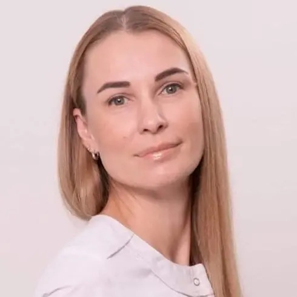
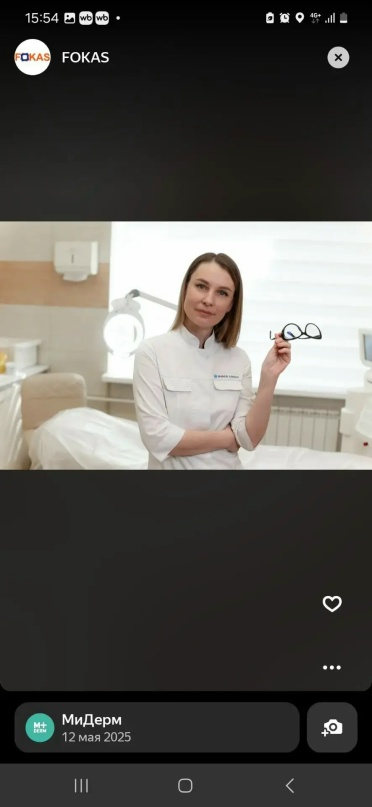
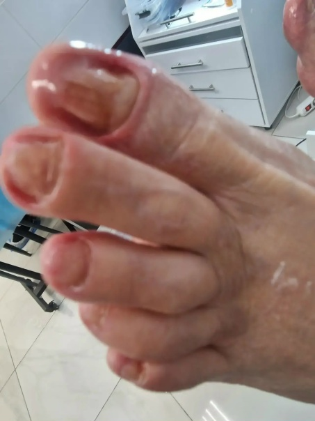
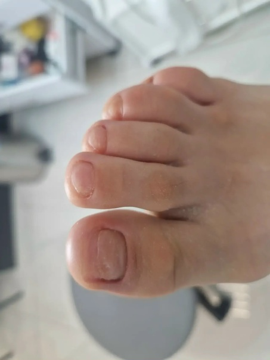
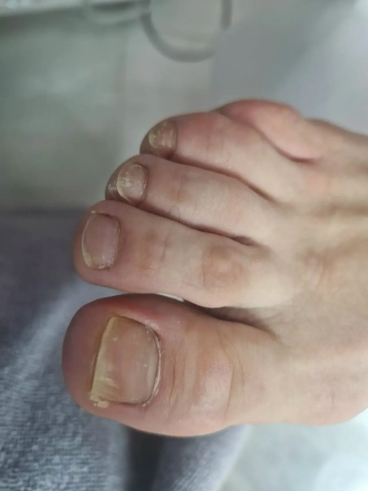

Частная практика · Москва
Уход за стопами,
где важны детали.
Рудновская Ольга Алексеевна — специалист по уходу за стопами и ногтями. Внимательная работа с вашим запросом, понятные рекомендации и спокойная атмосфера на приёме.

Персональный подход
к уходу за стопами и ногтями
01 / Направления
Не только эстетика.
Внимание к состоянию стоп и ногтей.
Подологический уход отличается от обычного эстетического педикюра более внимательным индивидуальным подходом к запросу. Без громких обещаний — с понятной логикой работы и рекомендациями по дальнейшему уходу.

02 / Подход
Сначала — понять запрос.
Потом — действовать.
На приёме важно не торопиться с выводами. Я ориентируюсь на конкретную ситуацию, состояние стоп и ногтей и подбираю формат ухода индивидуально.
ПонятноОбъяснить, что происходит на каждом этапе и что можно делать дальше.
БережноБез лишней агрессивности и обещаний результата, который нельзя гарантировать.
По делуЕсли ситуация требует другого специалиста, рекомендовать обратиться к профильному врачу.
03 / В чём отличие
Подологический уход —
это не просто педикюр.
Эстетический педикюр в первую очередь работает с внешним видом. В подологическом уходе внимание уделяется ещё и ситуациям, где стопам или ногтям нужен более индивидуальный подход.
Это не заменяет медицинскую диагностику или врачебный приём. При необходимости можно рекомендовать обращение к профильному врачу.
04 / Обо мне
Ольга
Рудновская
Специалист по уходу за стопами и ногтями. В работе для меня важны аккуратность, понятная коммуникация и индивидуальный подход к каждому запросу.
О специалисте ↗05 / Стоимость
Часть прайса
Здесь показаны несколько подтверждённых позиций. Полный согласованный прайс будет вынесен на отдельную страницу.
06 / Работы
Результат лучше
показывать, а не обещать.
Примеры реальных случаев из практики.



07 / Видео
О работе —
от первого лица.
Короткие видео из практики и кабинета Ольги Рудновской.
07 / Отзывы
Отзывы клиентов
Реальные отзывы будут добавлены после согласования с клиентом. Мы не используем вымышленные имена, оценки и цитаты.
08 / Если нужен другой специалист
Когда вопрос выходит
за рамки ухода.
При необходимости могу порекомендовать обратиться к профильному врачу или пройти необходимые исследования.
Мой кабинет расположен в одном помещении с лабораторией ДНКОМ, поэтому необходимые исследования можно пройти по тому же адресу. Лабораторные услуги оказывает непосредственно ООО «ДНКОМ». Я не являюсь сотрудником лаборатории.
Формулировка этого блока требует финального согласования перед публикацией.09 / Кабинет
Москва,
Боровское шоссе
2А, корпус 3. Приём проходит по предварительной записи.
- Телефон
- +7 (929) 540-06-67
- График
- ПН–СБ — по предварительной записи
ВС — выходной - Запись
- WhatsApp ↗
Предварительная запись
Есть вопрос по услуге?
Можно сначала обсудить.
Позвоните или напишите в WhatsApp — уточним запрос и договоримся об удобном времени.